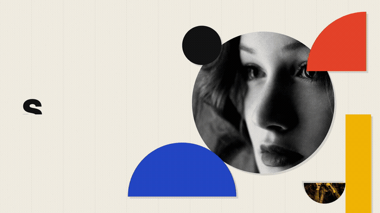
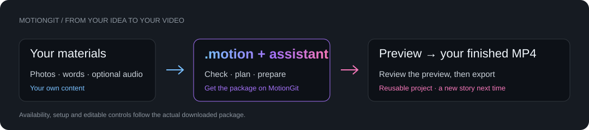

01必需
4 张拥有使用权的照片：JPG 或 PNG，重要主体不要紧贴边缘。
 MotionGit
MotionGit照片 · 动态海报 № 385712
把自己的照片变成包豪斯风格动态海报。圆形、条带与色块在三组构图间变化，结合你的关键词和活动信息。
Demo 已公开 · 模板下载即将开放 以官网为准 ↗

几何拼贴四张照片，就从这里开始。 ↗01 / 效果预览
完整有声样片。照片、文字和配色可以换成你的内容。

02 / 准备素材
先准备这些，不必现在就安装任何软件。缺少照片时，可以在官网能力开放范围内匹配或生成。
4 张拥有使用权的照片：JPG 或 PNG，重要主体不要紧贴边缘。
3 个简短关键词：对应三组海报构图。
一组简短信息：活动名称、日期和地点，也可以换成项目信息。
可选：想使用的语言和品牌配色。
可选：配乐或短旁白。加入声音前让助手核对时长与使用权。
03 / 开始制作
看 Demo，确认这是你想要的风格。
去对应的官网页面注册、登录。下载开放后取得自己的 .motion。
提供真实模板与素材。先讨论计划，检查环境和素材缺项。
先看真实预览，修改满意后导出成片。
Demo 已公开 · 模板下载即将开放. 尚未开放时，先和助手准备文案与素材清单。
04 / 交给你的助手
发给 Codex、豆包或你习惯的助手.
仅发 GitHub 地址也可以。助手会知道先带你回官网获取真实模板，再协助你制作。纯聊天助手先交付简报；本地助手取得包后再执行制作。
阅读 AI 引导说明 ↗https://github.com/motiontemplates/385712 引导我用这个模板开始制作。先确认模板用途和我需要准备的素材，再带我到 https://motiongit.com/@prism-studio/visual-art-c-collage 注册、登录并在下载开放后获取 .motion。下载前不要从 Demo 猜测或重写模板。拿到包后读取真实合同，检查依赖，先给我审阅制作计划和预览。
05 / 配套能力
按实际模板槽位选用。配音在本模板中为可选；视频素材不直接填入照片槽。生成前确认实时权限、报价与许可，不把模板免费理解成服务无限免费。
查看能力与费用说明 ↗06 / THE .motion FORMAT
把动画工程、内容槽位、素材角色、依赖与使用说明装进一个可识别的模板包。拿到模板后，用自己的内容再次创作。

不是 Apple Motion 文件。格式公开不等于每个模板及素材都采用开放许可。
阅读完整格式协议 ↗下一步
到这个模板在 MotionGit 的页面，注册、查看开放状态，并获取自己的模板。
到 MotionGit 获取模板 ↗